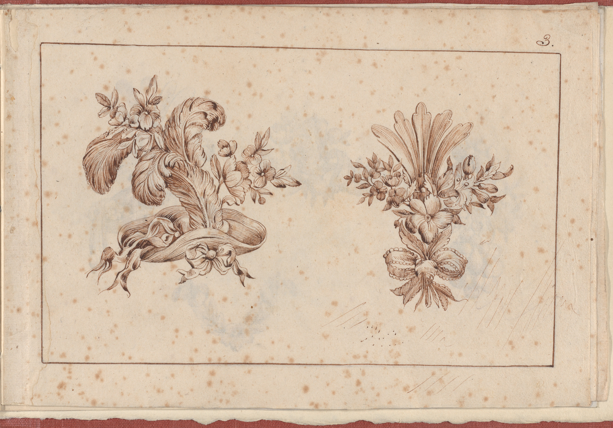
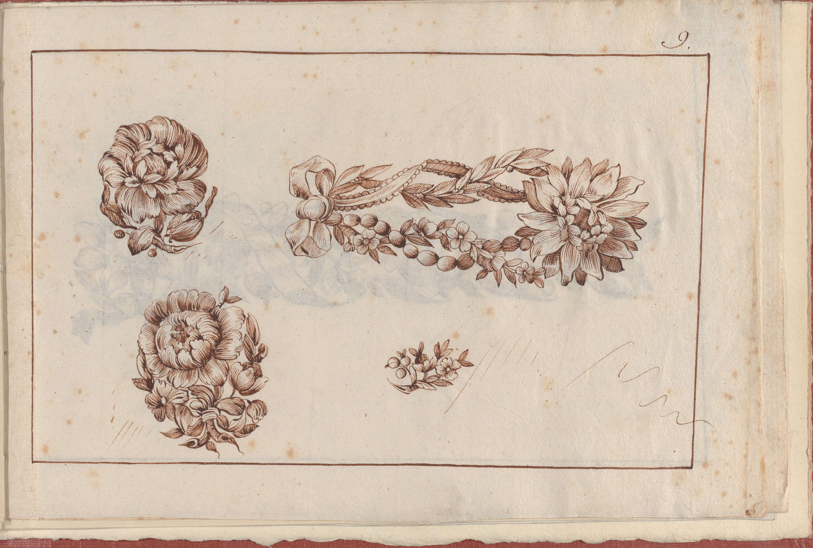

One plate.Twice over.
1770 or after
Same recorded sheet size
The source prints are not pictured in the Met records; this pairing follows their catalogue references.
after plate 06

after plate 06

Leaf 03 / On the sheetOne plume sweeps sideways over flowers; another rises into a fan above a flower and ribbon.Met mappingThe left drawing is after plate 6; the right is after plate 7.
Leaf 09 / On the sheetTwo large flower clusters sit apart. A long floral and ribbon design crosses the sheet above a smaller cluster.Met mappingThe two main flower brooches are after plate 6; other designs are linked to plates 8 and 11.
A page can borrow a part.
The Met describes plate 6 as a page of several designs, including an aigrette and two flower brooches. In the album, selections from it receive new pages, numbers, and neighbors: the left drawing on page 3 and the two main flowers on page 9 are both linked to plate 6.
Page 9's two flowers sit closely against their catalogue description. Page 3's record names a bird and guide marks for an unfinished girandole, and says the engraving is fully copied. I cannot yet place those forms with confidence in the ink lines.
Rijksmuseum's high-resolution image of series no. 6/12 shows a sheet visibly numbered 6. Its upper-left aigrette, with bent plume, flowers, and ribbon, fits page 3's left drawing and the Met's left-to-6 mapping; the other motifs also meet the Met's inventory for no. 6. DIVA's brochure captions its different image as print no. 6 from the Paris 1770 book and credits the reproduction to DIVA. Its lower-right group still seems closer to page 3's right drawing. DIVA's bound album includes the 1770 print series and a separate G. Hue facsimile from 1907; an exhibition list indexes a related chatelaine print as P2018/1/6. That context does not tell me why these arrangements differ.
Related records: Met source plate 6, Rijksmuseum series no. 6/12, Met source plate 7, DIVA's brochure reproduction, p. 17, DIVA's account of the bound album, and DIVA's listing for P2018/1/6. I made a text-only reading of the plate 7 record while its image remains unavailable.